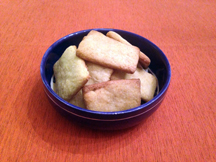

Fancy Cakes

Here we have a recipe for some small, rather hard cakes. They are delectable still.
Fancy cakes are good for large groups and snacking, as one batch makes many cakes.
Ingredients:
- Flour
- Sugar
- Softened butter
- Cloves
- Mace
- Salt
- Saffron
- Two egg yolks
- Rosewater
- Yeast
Instructions:
- Put flour, sugar, and spices in a bowl, and mix them well.
- Cut in the butter until it forms small crumbs.
- Beat the yolks well with the rosewater and foam from the yeast.
- add the egg mixture to the dry ingredients and mix together until a dough forms.
- Roll the dough out flat, cut into shapes, and bake in the oven until the cakes are golden brown.
back